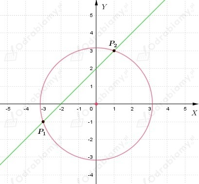
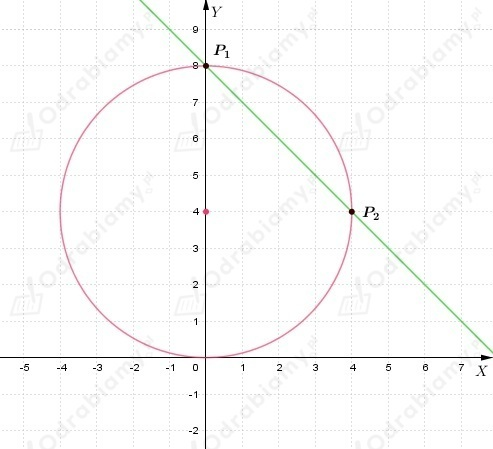
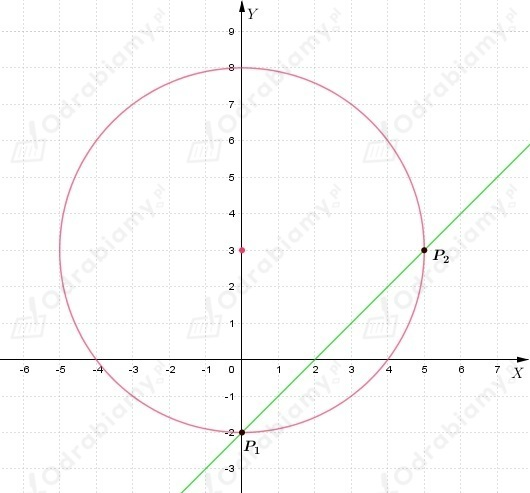
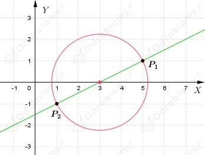
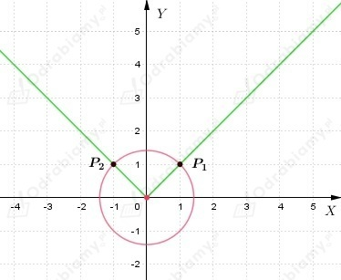
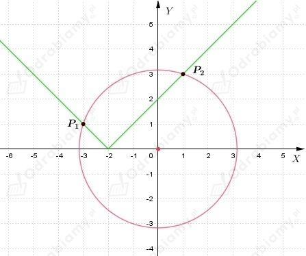
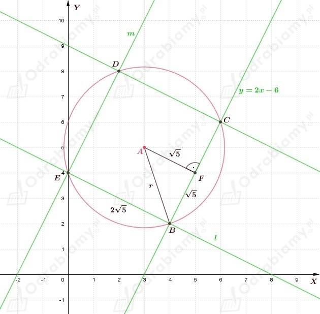

a)
Podstawiamy y=x+m do pierwszego równania:
Obliczamy wyróżnik otrzymanego równania kwadratowego. Liczba rozwiązań
układu równań jest równa liczbie rozwiązań tego równania.
Wobec tego
Układ równań ma jedno rozwiązanie, gdy
Układ równań ma dwa rozwiązania, gdy
Układ równań nie ma rozwiązań, gdy
b)
Podstawiamy y=-2x+m do pierwszego równania:
Obliczamy wyróżnik otrzymanego równania kwadratowego. Liczba rozwiązań
układu równań jest równa liczbie rozwiązań tego równania.
Wobec tego
Układ równań ma jedno rozwiązanie, gdy
Układ równań ma dwa rozwiązania, gdy
Układ równań nie ma rozwiązań, gdy
c)
Podstawiamy y=2x+1 do pierwszego równania:
Obliczamy wyróżnik otrzymanego równania kwadratowego. Liczba rozwiązań
układu równań jest równa liczbie rozwiązań tego równania.
Wobec tego
Układ równań ma jedno rozwiązanie, gdy
Układ równań ma dwa rozwiązania, gdy
Układ równań nie ma rozwiązań, gdy
d)
Podstawiamy y=3x+3 do pierwszego równania:
Obliczamy wyróżnik otrzymanego równania kwadratowego. Liczba rozwiązań
układu równań jest równa liczbie rozwiązań tego równania.
Wobec tego
Nie ma takiego m dla którego układ równań miałby jedno rozwiązanie.
Powyższa nierówność jest spełniona dla każdej liczby rzeczywistej.
Układ równań ma dwa rozwiązania, gdy
Nie ma takiego m dla którego układ równań nie miałby rozwiązania.
a)
Z drugiego równania wyznaczamy x
i podstawiamy do pierwszego równania
Wracamy do podstawienia i wyznaczamy x
Zatem rozwiązaniem układu są dwie pary liczb
Interpretacja geometryczna układu równań

Okrąg i prosta mają dwa punkty wspólne: P1(-3, -1) i P2(1, 3).
b)
Podstawiamy do do drugiego równania y=8-x
Wracamy do podstawienia i wyznaczamy y
Zatem rozwiązaniem układu są dwie pary liczb
Interpretacja geometryczna układu równań

Okrąg i prosta mają dwa punkty wspólne: P1(0, 8) i P2(4, 4).
c)
Podstawiamy do drugiego równania y=x-2
Wracamy do podstawienia i wyznaczamy y
Zatem rozwiązaniem układu są dwie pary liczb
Interpretacja geometryczna układu równań

Okrąg i prosta mają dwa punkty wspólne: P1(0, -2) i P2(5, 3).
d)
Z pierwszego równania wyznaczamy x
i podstawiamy do drugiego równania
Wracamy do podstawienia i wyznaczamy x
Zatem rozwiązaniem układu są dwie pary liczb
Interpretacja geometryczna układu równań

Okrąg i prosta mają dwa punkty wspólne: P1(5, 1) i P2(1, -1).
e)
Podstawiamy do pierwszego równania y=|x|
Wracamy do podstawienia i wyznaczamy y
Zatem rozwiązaniem układu są dwie pary liczb
Interpretacja geometryczna układu równań

Dwa punkty wspólne: P1(1, 1) i P2(-1, 1).
f)
Podstawiamy do pierwszego równania y=|x+2|
Wracamy do podstawienia i wyznaczamy y
Zatem rozwiązaniem układu są dwie pary liczb
Interpretacja geometryczna układu równań

Dwa punkty wspólne: P1(-3, 1) i P2(1, 3).
a)
Z treści zadania wiemy, że w okrąg
został wpisany trójkąt równoramienny prostokątny i wierzchołek kąta prostego tego trójkąta
ma współrzędne (2, 4).
Zauważmy, że środek okręgu, to punkt S(0, 0), natomiast r=√20.
Niech A(2, 4), a B i C będą pozostałymi wierzchołkami trójkąta.
Skoro trójkąt ABC jest prostokątny, to długość jego przeciwprostokątnej jest równa średnicy okręgu |BC|=2r.
Wiemy, że trójkąt ABC jest również równoramienny, zatem
Wyznaczamy równanie prostej BC. Wiemy, że prosta BC przechodzi przez punkt S, zatem
zapisujemy równanie prostej w postaci ogólnej
Wartość współczynnika a możemy obliczyć korzystając ze wzoru na odległość puntu A od prostej y=ax.
Dostajemy
Wiemy, że punkty B i C leżą na prostej BC oraz na okręgu x2+y2=20, więc aby wyznaczyć ich współrzędne
należy rozwiązać układ równań
Podstawiamy wartość y z drugiego równania do pierwszego i dostajemy
Wracamy do podstawienia i wyznaczamy wartość y
Zatem wnioskujemy, że B(-4, 2), C(4, -2).
b)
Z treści zadania wiemy, że w okrąg
został wpisany trójkąt równoramienny i podstawa tego trójkąta zawiera się w prostej
Zauważmy, że środek okręgu, to punkt S(-2, 2), natomiast r=√20.
Wiemy, że punkty dwa wierzchołki trójkąta leżą na prostej y=1/2x+3 oraz na okręgu (x+2)2+(y-2)2=20, więc aby wyznaczyć ich współrzędne
należy rozwiązać układ równań
Podstawiamy wartość y z drugiego równania do pierwszego i dostajemy
Wracamy do podstawienia i wyznaczamy wartość y
Zatem wnioskujemy, że punkty A(-6, 0), B(2, 4) są dwoma wierzchołkami trójkąta.
Zauważamy, że środek okręgu leży na prostej y=1/2x+3, zatem punkt C leży na prostej do niej
prostopadłej i przechodzącej przez punkt S.
Wstawiamy współrzędne punktu S
zatem punkt C leży na prostej y=-2x-2.
Rozwiązujemy układ równań
Wstawiamy wartość y z drugiego równania do pierwszego i otrzymujemy
Wracamy do podstawienia i wyznaczamy wartość y
Wnioskujemy, że wierzchołek C ma współrzędne (0, -2) lub (-4, 6).
a)
Z treści zadania wiemy, że jeden z boków prostokąta wpisanego w okrąg
jest zawarty w prostej y=x+4.
Zatem, aby wyznaczyć współrzędne dwóch wierzchołków tego prostokąta należy wyznaczyć punkty wspólne okręgu i prostej.
Rozwiązujemy układ równań
Podstawiamy do pierwszego równania y=x+4 i otrzymujemy
Wracamy do podstawienia i wyznaczamy wartość y
Rozwiązaniem układu równań są dwie pary liczb
Wnioskujemy, że punkty (-3, 1), (1, 5) są dwoma wierzchołkami prostokąta.
Wiemy, że prosta y=-x+b przechodząca przez punkt (-3, 1) jest prostopadła do prostej
y=x+4 oraz zawierają się w niej dwa wierzchołki prostokąta w tym wierzchołek o współrzędnych (-3, 1).
Podstawmy współrzędne punkty (-3, 1) do równania prostej, aby wyznaczyć wartość współczynnika b.
czyli prosta ma równanie y=-x-2.
Rozwiązujemy poniższy układ równań, aby wyznaczyć współrzędne trzeciego wierzchołka prostokąta.
Podstawiamy do pierwszego równania y=-x-2 i otrzymujemy
Wracamy do podstawienia i wyznaczamy wartość y
Rozwiązaniem układu równań są dwie pary liczb
Wnioskujemy, że punkt (5, -7) jest trzecim wierzchołkiem prostokąta.
Wiemy, że prosta y=x+c przechodząca przez punkt (5, -7) jest prostopadła do prostej
y=-x-2 oraz zawierają się w niej dwa wierzchołki prostokąta w tym wierzchołek o współrzędnych (5, -7).
Podstawmy współrzędne punkty (5, -7) do równania prostej, aby wyznaczyć wartość współczynnika c.
czyli prosta ma równanie y=x-12.
Rozwiązujemy poniższy układ równań, aby wyznaczyć współrzędne trzeciego wierzchołka prostokąta.
Podstawiamy do pierwszego równania y=x-12 i otrzymujemy
Wracamy do podstawienia i wyznaczamy wartość y
Rozwiązaniem układu równań są dwie pary liczb
Wnioskujemy, że punkt (9, -3) jest czwartym wierzchołkiem prostokąta.
Odp: Wierzchołki prostokąta mają współrzędne (-3, 1), (1, 5), (5, -7), (9, -3).
b)
Z treści zadania wiemy, że bok kwadratu zawarty jest w prostej y=2x-6, a jego przekątne
przecinają się w punkcie A(3, 5).
Możemy wywnioskować, że skoro przekątne kwadratu wpisanego w okrąg przecinają się w punkcie A, to punkt
A jest środkiem okręgu.
Zatem należy wyznaczyć długość promienia okręgu, aby móc zapisać równanie okręgu.
Zapisujemy równanie prostej w postaci ogólnej
Wyznaczamy odległość środka okręgu od prostej.
Wyznaczamy równanie prostej prostopadłej do prostej y=2x-6 oraz przechodzącej przez punkt A.
Zatem prosta k ma równanie
Wyznaczamy współrzędne punktu przecięcia prostych
Zatem oznaczamy punkt wspólny prostych jako F(5, 4).

Możemy zauważyć, że skoro
to również
ponieważ są to połowy długości boku kwadratu.
Wobec tego możemy wyznaczyć długość promienia okręgu, na przykład korzystając z twierdzenia Pitagorasa
Równanie okręgu
Wiemy, że
więc możemy wyznaczyć współrzędne wierzchołka B i C korzystając z definicji długości odcinka
Niech B(x, 2x-6)
Wyznaczamy wartość drugiej współrzędnej punktu B i C
Wnioskujemy że B(4, 2), C(6, 6).
Wyznaczamy równanie prostej prostopadłej do prostej y=2x-6 i przechodzącej przez punkt B.
Wiemy, że bok kwadratu ma długość 2√5. Oznaczamy wierzchołek kwadratu leżący na
prostej l inny niż B jako wierzchołek E.
Zatem
Wnioskujemy, że E(0, 4). Punkt (8, 0) odrzucamy, ponieważ znajduje się poza okręgiem.
Prosta równoległa do prostej y=2x-6 i przechodząca przez punkt F, to prosta
Oznaczamy wierzchołek kwadratu leżący na prostej m inny niż E jako wierzchołek D.
Zatem
Wnioskujemy, że D(2, 8). Punkt (-2, 0) odrzucamy, ponieważ znajduje się poza okręgiem.
Współrzędne wierzchołków kwadratu, to
Równanie okręgu
Wiemy, że jedna z przekątnych kwadratu ABCD jest zawarta w prostej
Zapisujemy równanie prostej w postaci kierunkowej
Wyznaczmy współrzędne wierzchołków kwadratu ABCD rozwiązując układ równań
Podstawiamy wartość y z drugiego równania do pierwszego i dostajemy
Zatem rozwiązaniem układu są dwie pary liczb
Więc wierzchołek B ma współrzędne (4, -2), a wierzchołek D ma współrzędne (0, 4).
Zapisujemy równanie okręgu w postaci kanonicznej
Zauważamy, że punkt S(2, 1) jest środkiem okręgu.
Prosta prostopadła do BD i przechodząca przez punkt S, to prosta na której leżą pozostałe dwa
wierzchołki kwadratu
Rozwiązujemy układ równań
Podstawiamy wartość y z drugiego równania do pierwszego i dostajemy
Zatem rozwiązaniem układu są dwie pary liczb
Więc wierzchołek C ma współrzędne (-1, -1), a wierzchołek A ma współrzędne (5, 3).
Obliczamy długość boku kwadratu ABCD
Obliczamy pole kwadratu ABCD
a)
Przekształcamy równanie okręgu do postaci kanonicznej
Zauważamy, że środek okręgu, to punkt S(2, 1), natomiast r=1.
Zapisujemy równanie prostej w postaci ogólnej
Wyznaczmy odległość punktu S od prostej l.
Niech 2b będzie długością cięciwy.
Korzystając z Twierdzenia Pitagorasa może obliczyć wartość b
Zatem długość cięciwy, to
b)
Przekształcamy równanie okręgu do postaci kanonicznej
Zauważamy, że środek okręgu, to punkt S(4, -1), natomiast r=√10.
Zapisujemy równanie prostej w postaci ogólnej
Wyznaczmy odległość punktu S od prostej l.
Niech 2b będzie długością cięciwy.
Korzystając z Twierdzenia Pitagorasa może obliczyć wartość b
Zatem długość cięciwy, to
c)
Przekształcamy równanie okręgu do postaci kanonicznej
Zauważamy, że środek okręgu, to punkt S(-2, 1), natomiast r=√13.
Zapisujemy równanie prostej w postaci ogólnej
Wyznaczmy odległość punktu S od prostej l.
Niech 2b będzie długością cięciwy.
Korzystając z Twierdzenia Pitagorasa może obliczyć wartość b
Zatem długość cięciwy, to